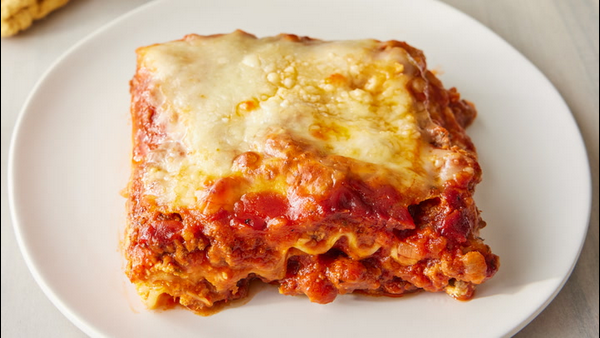

World's Best Lasagna
Description
Lasagna is a beloved dish with a rich history. Originating from ancient Greece as “laganon,” it evolved in Italy into the classic we adore today. Picture layers of perfectly cooked pasta, rich meat sauce, creamy béchamel, and melted cheese. Each bite is a delightful blend of flavors and textures, reminiscent of an Italian trattoria. Versatile and crowd-pleasing, lasagna is perfect for family dinners or special occasions. Dive into this historical and delicious dish and impress your loved ones!
Ingredients:
- 12 lasagna noodles
- 1 lb ground beef
- 2 cups ricotta cheese
- 2 cups shredded mozzarella cheese
- 1/2 cup grated Parmesan cheese
- 1 jar (24 oz) marinara sauce
- 1 egg
- 2 cloves garlic, minced
- 1 tbsp olive oil
- 1 tsp dried basil
- 1 tsp dried oregano
- Salt and pepper to taste
Instructions:
- Preheat your oven to 375°F (190°C).
- Heat olive oil in a large pan over medium heat. Add onion, carrot, and garlic, and cook until softened.
- Add ground beef and pork, cooking until browned.
- Stir in passata, crushed tomatoes, tomato paste, bouillon cubes, oregano, basil, sugar, salt, and pepper. Simmer for 30 minutes.
- In a separate saucepan, melt butter over medium heat. Stir in flour and cook for 1 minute. Gradually whisk in milk and cook until thickened. Stir in Parmesan cheese.
- In a baking dish, spread a layer of meat sauce, followed by lasagna sheets, white sauce, and mozzarella cheese. Repeat layers, finishing with mozzarella on top.
- Bake for 45 minutes, or until bubbly and golden. Let stand for 10 minutes before serving.